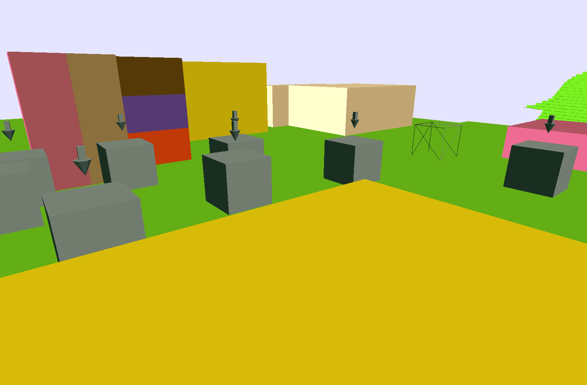
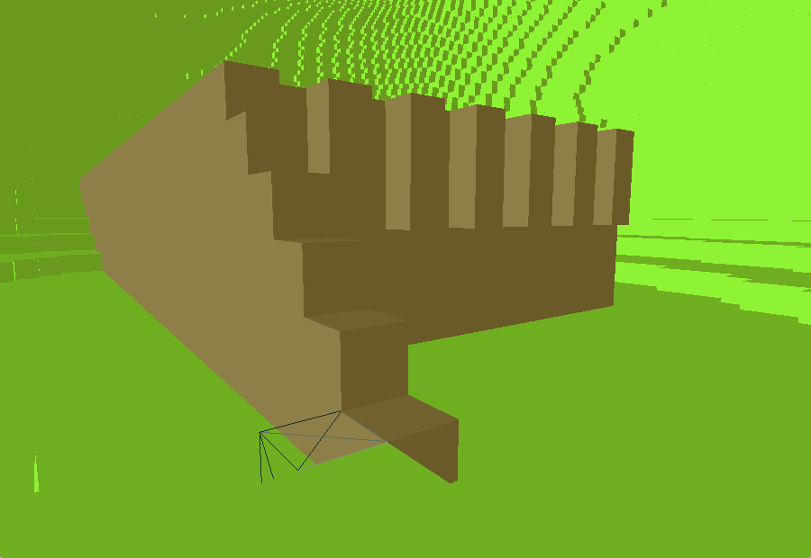
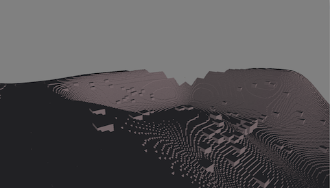
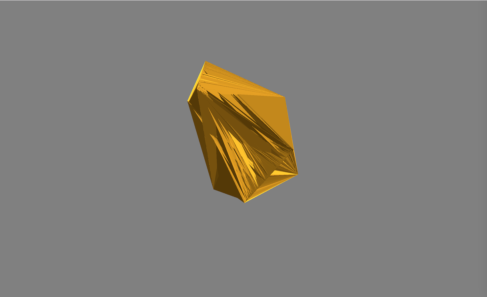
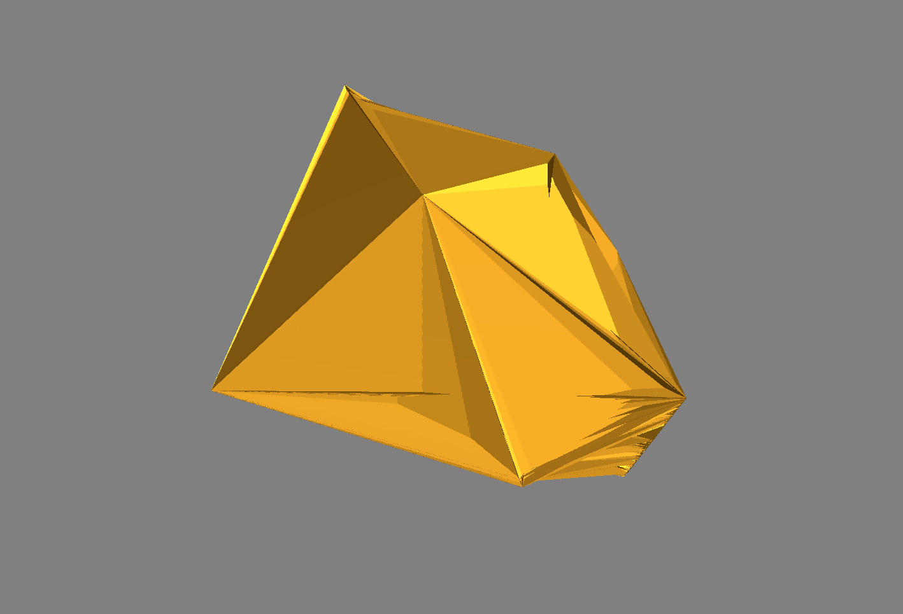

Game Of Stones
- 3D Voxel-Terrain, “Colony Management” video game prototype
- Created using C++ and OpenGL
- Uses PolyVox library for
- Management of voxel data
- Triangle mesh generation of voxels
- aid in 3D pathfinding
- Uses BulletPhysics library for player physics
Screenshots

Demonstration of multiple block colors as well as selection arrows for colonists.

Small building.

Glitchy view from underneath the terrain.

Image from immediately after I got 'picking' to work. All the cubes are those placed by the mouse. The spikes in the background are the limit of the loaded terrain.

Very early image from when I was trying to send voxel meshes to the GPU. All the vertices were accidently being rendered in a very small area leading to this spiky-looking object.

Same as previous image.